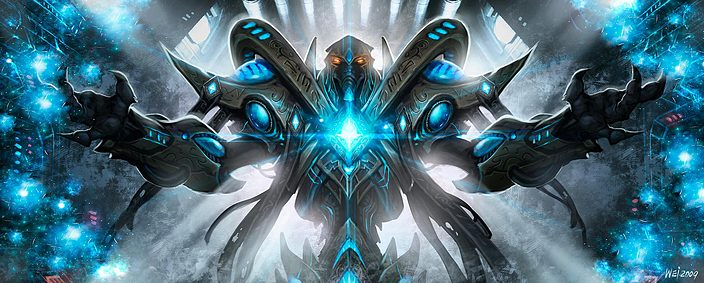
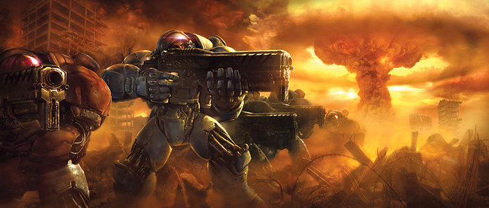
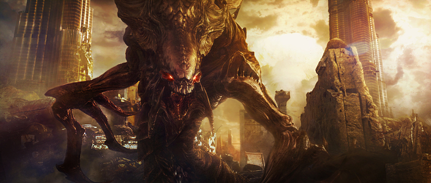

Hemos esperado más de una década para volver a sumergirnos en el universo StarCraft, pero la espera ha merecido la pena. La obra de Blizzard regresa para recuperar el trono de los juegos de estrategia en tiempo real.
Ir al formulario de registro!Durante miles de años, los ancestrales y misteriosos protoss han usado su tecnología alienígena y poderes psiónicos para mantener el orden y la paz en su lado de la galaxia.
Templados por las tribulaciones y el conflicto, los ingeniosos terran han demostrado ser un adversario formidable tanto para los tecnológicamente avanzados protoss como para los voraces zerg.
Dirigidos por la astuta Reina de las Cuchillas, los zerg buscan desencadenar sus horrores alienígenas por toda la galaxia y amenzan con consumir a todo aquél que se atraviese en su camino.
